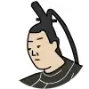

Spin & Discover Kakekotoba!Poem 24: Kanke

Try to find the kakekotoba hidden in the poem and tap it.
The word you tap will spin right where it is, revealing its two meanings in turn.
このたびは
幣もとりあへず
手向山
もみぢのにしき
神のまにまに
Commentary
The word "tabi" is a kakekotoba.
A kakekotoba layers two meanings onto a single word that sounds the same either way.
Here, "tabi" carries both "度" (this time) and "旅" (journey).
Setting out so suddenly on this journey, I could not properly prepare offerings for the gods. In their place, please accept the beautiful autumn leaves of Mount Tamuke as my offering, however the gods see fit — that is the feeling expressed in this poem.
Packing two meanings into just thirty-one syllables is exactly what makes kakekotoba so appealing.
Vocabulary
"Kono tabi" means "this time."
That the poet is in the midst of a journey.
An offering made of cloth or paper, presented to the gods.
Unable to prepare properly.
An old name for a mountain where offerings were made to the gods and buddhas for a safe journey.
Some say it refers to a specific mountain in Nara.
An expression comparing autumn leaves to beautiful brocade.
However the gods see fit.
"Manimani" means "in accordance with ~."